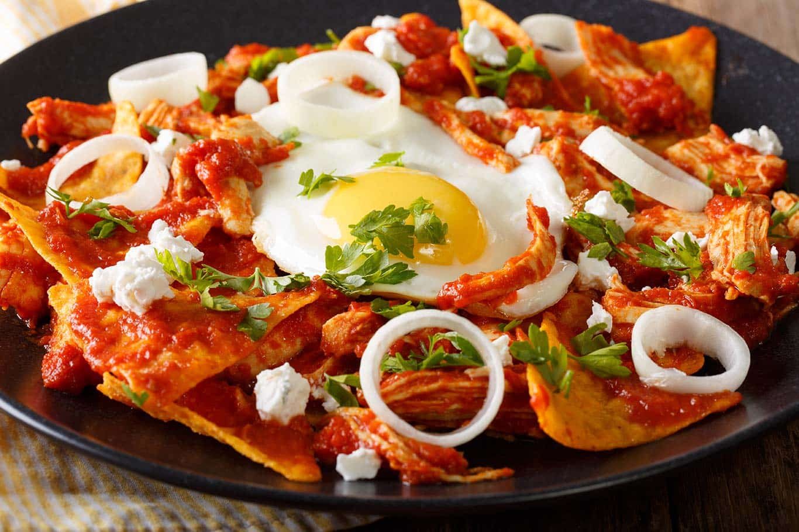

Home
Chilaquiles Recipe

Description:
Traditional Mexican chilaquiles made with crispy tortilla chips simmered in flavorful red or green salsa,
then topped with crema, fresh cheese, onions, and cilantro.
Often served with eggs or shredded chicken, this comforting dish combines bold,
tangy flavors with a satisfying mix of crunchy and tender textures, making it a beloved Mexican breakfast classic.
Ingredients:
- Tortilla chips or fried corn tortillas
- 4 tomatos
- 2 dried guajillo chiles
- 1 garlic clove
- 1/4 cup diced onions
- Salt
- Oil
- Cream
- Fresh cheese
- Chicken or eggs
Steps:
- In a skillet, heat oil and fry the tortilla chips until crispy. Set aside.
- In a blender, combine tomatos, guajillo chiles, garlic, onions, and salt. Blend until smooth to make the salsa.
- In the same skillet, heat the salsa until it simmers. Add the fried tortilla chips and toss to coat them in the salsa. Cook for a few minutes until the chips soften slightly but still retain some crunch.
- Serve the chilaquiles hot, topped with a drizzle of cream, crumbled fresh cheese, and your choice of shredded chicken or fried eggs.